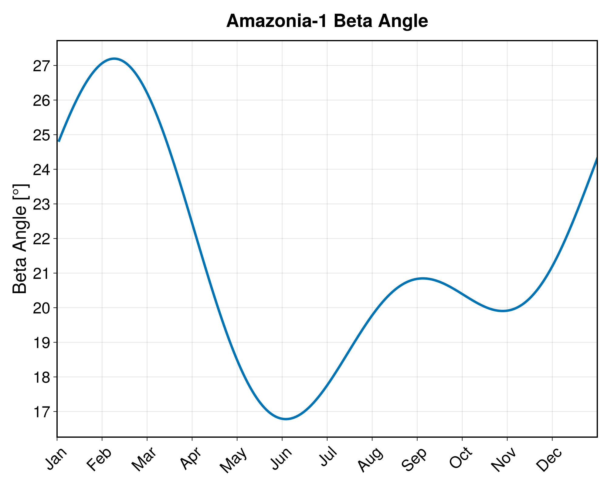

Beta Angle
The beta angle is the angle between the orbit plane and the Sun, as shown in the following figure. The positive direction is defined as that of the orbit angular momentum.
The beta angle is useful when computing the mean amount of solar radiation a satellite receives in a particular orbit.
We can compute the beta angle of an orbit using the function:
beta_angle(orb::KerplerianElements{Tepoch, T}, Δjd::Number; kwargs...) -> Float64This function computes the beta angle [rad] for the orbit orb after Δjd days from its epoch.
The algorithm was obtained from [1].
It is expected that the input elements are represented in the TOD reference frame. If it is not the case, they can be converted using the function orb_eci_to_eci of SatelliteToolboxTransformations.jl.
The following keywords are available:
perturbation::Symbol: Select the perturbation terms that must be used when propagating the right ascencion of the ascending node. The possible values are::J0: Consider a Keplerian orbit.:J2: Consider the perturbation terms up to J₂.:J4: Consider the perturbation terms J₂, J₂², and J₄.
:J2)
Examples
We will compute the beta angle of the Amazonia-1 mission for one year. The first thing we need to do is define the orbit:
julia> jd₀ = date_to_jd(2021, 1, 1)2.4592155e6julia> orb = KeplerianElements( jd₀, 7130.982e3, 0.001111, 98.405 |> deg2rad, ltdn_to_raan(10.5, jd₀), π / 2, 0 )KeplerianElements{Float64, Float64}: Epoch : 2.45922e6 (2021-01-01T00:00:00) Semi-major axis : 7130.98 km Eccentricity : 0.001111 Inclination : 98.405 ° RAAN : 78.4021 ° Arg. of Perigee : 90.0 ° True Anomaly : 0.0 °
Now, we can use the function beta_angle to obtain the beta angle [rad] for each day of the year:
julia> β = beta_angle.(orb, 1:365)365-element Vector{Float64}: 0.432769059439428 0.43467611908719883 0.43656171032862834 0.43842380844466566 0.4402604460815964 0.4420696960668151 0.4438496428519736 0.44559834924548514 0.4473138284119864 0.4489940331106146 ⋮ 0.41833073501524676 0.42033658211422464 0.4223402721893086 0.42433985882712166 0.4263334149194056 0.4283190235472065 0.43029475458852695 0.43225862572658325 0.4342085608107653
If we use CairoMakie.jl to plot, we obtain:

References
- [1]: Mortari, D., Wilkins, M. P., and Bruccoleri, C. On Sun-Synchronous Orbits and Associated Constellations.